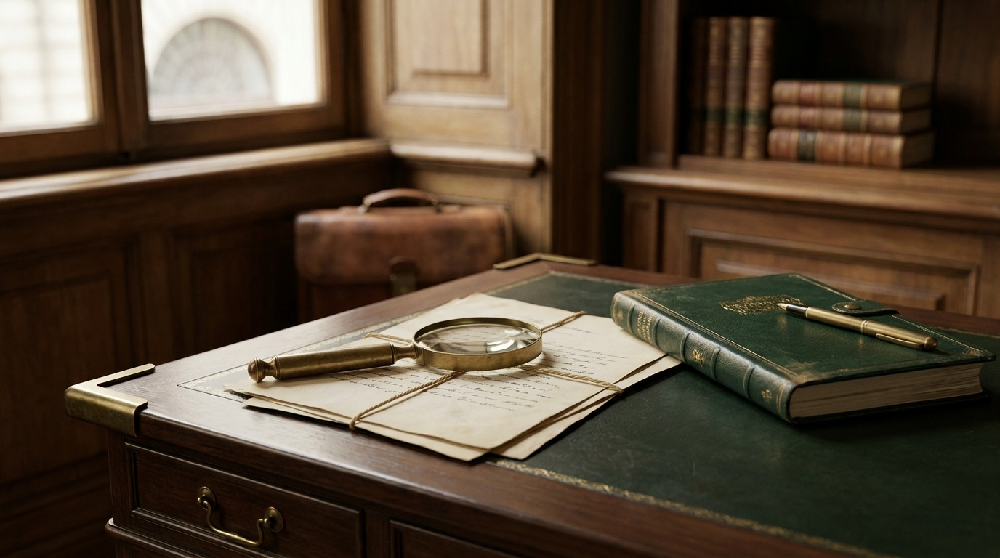

Licenziamento ritorsivo: la prova può fondarsi su indizi
Con l'ordinanza n. 13711 dell'11 maggio 2026, la Cassazione conferma che il licenziamento ritorsivo può essere dimostrato anche con indizi gravi, precisi e concordanti, senza necessità di prove dirette. Una pronuncia che incide sull'onere probatorio del lavoratore e sui margini di difesa del datore, rendendo più concreta la tutela contro i recessi adottati per motivi vendicativi.

Il caso
Un dipendente impugna il proprio licenziamento sostenendo che si tratti di un atto ritorsivo, cioè di una reazione del datore di lavoro a un comportamento legittimo del lavoratore: una rivendicazione retributiva, una segnalazione, un'azione giudiziaria precedente. La difficoltà, in questi casi, è sempre la stessa: provare il motivo nascosto dietro un licenziamento formalmente presentato come economico o disciplinare.
La Corte di Cassazione, Sezione Lavoro, con l'ordinanza n. 13711 dell'11 maggio 2026, affronta proprio questo nodo probatorio e chiarisce che il carattere ritorsivo può emergere anche da un quadro indiziario, senza che sia necessaria una prova diretta del movente illecito.
Inquadramento normativo
Il licenziamento ritorsivo rientra tra i licenziamenti nulli perché determinati da un motivo illecito determinante ai sensi dell'art. 1345 del Codice civile, richiamato in materia di lavoro. Si tratta di un recesso in cui la ragione reale non è quella dichiarata, ma una finalità di rappresaglia nei confronti del dipendente.
La nullità comporta conseguenze più gravi della semplice illegittimità: trova applicazione la tutela reintegratoria piena, con reintegrazione nel posto di lavoro e risarcimento del danno, a prescindere dal numero di dipendenti dell'azienda (art. 18 della legge n. 300/1970, come modificato, e art. 2 del d.lgs. n. 23/2015 per i nuovi assunti).
Sul piano della prova, l'onere grava in linea di principio sul lavoratore, che deve dimostrare il carattere ritorsivo del recesso. La Cassazione, con l'ordinanza in commento, precisa però che questo onere può essere assolto attraverso presunzioni semplici (artt. 2727 e 2729 c.c.): un insieme di elementi indiziari gravi, precisi e concordanti idonei a far ritenere, secondo un criterio di probabilità qualificata, che il vero motivo del licenziamento fosse vendicativo.
Implicazioni pratiche
La pronuncia ha un effetto concreto sull'equilibrio del processo del lavoro.
Per il lavoratore, non è più indispensabile produrre una prova diretta e inequivoca del movente ritorsivo, spesso impossibile da reperire. Diventa sufficiente costruire un quadro coerente: la vicinanza temporale tra una rivendicazione e il licenziamento, l'incoerenza delle giustificazioni addotte dal datore, il trattamento differenziato rispetto ad altri colleghi, l'assenza di reali ragioni economiche o disciplinari.
Per il datore di lavoro, cresce l'esigenza di documentare in modo rigoroso le ragioni del recesso. Una motivazione debole o smentita dai fatti rischia di alimentare proprio il quadro indiziario che il giudice può valorizzare. Resta ferma la possibilità di fornire la prova contraria, dimostrando l'esistenza di un motivo lecito autonomo e sufficiente a sorreggere il licenziamento.
Va sottolineato un limite: l'indizio non equivale ad automatismo. Il giudice deve comunque valutare gli elementi nel loro insieme e motivare il proprio convincimento. La sentenza alleggerisce l'onere probatorio, non lo elimina.
Cosa fare in concreto
Per il lavoratore che ipotizza un licenziamento ritorsivo:
- Conserva ogni documento utile a ricostruire la sequenza dei fatti: email, comunicazioni, diffide, segnalazioni o azioni giudiziarie precedenti al recesso.
- Annota la cronologia degli eventi, evidenziando la prossimità temporale tra la tua iniziativa e il licenziamento.
- Raccogli elementi comparativi sul trattamento riservato ad altri dipendenti in situazioni analoghe.
Per il datore di lavoro che intende procedere a un licenziamento:
- Documenta in modo puntuale e verificabile le ragioni economiche o disciplinari poste a fondamento del recesso.
- Verifica la coerenza tra la motivazione formale e la condotta concreta dell'azienda, evitando disparità di trattamento difficilmente giustificabili.
In entrambi i casi, consigliamo di valutare la posizione con assistenza qualificata prima di agire o impugnare, considerati i termini di decadenza per l'impugnazione del licenziamento (60 giorni per il reclamo stragiudiziale e 180 giorni per il deposito del ricorso).
Disclaimer
Contributo informativo a cura di Tamburro & Partners - Avv. Giuseppe Tamburro. Non costituisce parere legale.
Ogni storia di lavoro ha i suoi tempi.
Se gestisci HR e vuoi un confronto su contenzioso, ispezioni o licenziamenti, scrivi allo studio. Ti rispondiamo entro un giorno lavorativo.